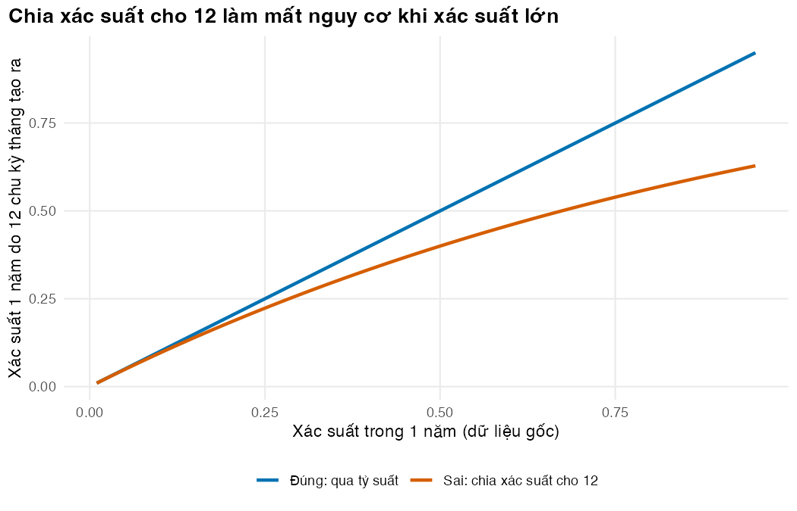
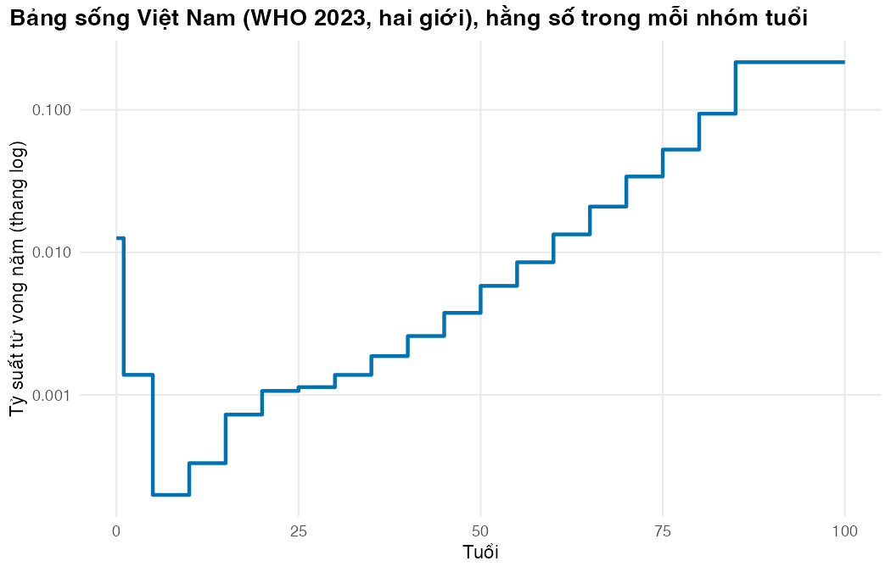

# Vietnamese text in figures needs a UTF-8 locale (Rscript may start in the "C" locale)
if (!isTRUE(l10n_info()[["UTF-8"]])) invisible(Sys.setlocale("LC_CTYPE", "en_US.UTF-8"))
source("../_shared/R/helpers.R")
source("../_shared/R/vn_data.R") # course-wide values: threshold, life table, prices
source("code/model.R")
library(ggplot2)
p <- m02_params() # params/mdrtb.csv + shared values
inp <- prepare_inputs(p)Bài 2: Tỷ suất, xác suất và độ dài chu kỳ
Biến số liệu công bố thành xác suất chuyển hằng tháng một cách đúng đắn
Vì sao bạn nên quan tâm?
Mở báo cáo của một Chương trình Chống lao tỉnh, bạn gặp bốn loại con số trộn lẫn: tỷ lệ thành công của phác đồ ngắn (76.2%), tỷ số chênh của phác đồ dài hạn (1.56), kết cục bất lợi của BPaLM trong thử nghiệm (12% so với 41%) và tỷ suất tử vong của người bỏ điều trị (lost to follow-up) (5.2/100 người-năm). Mỗi loại đi vào ma trận chuyển theo một đường riêng, và đi nhầm đường cũng giống đổi đô la theo giá bán của ngân hàng (26,377 VNĐ) thay vì tỷ giá chính thức (24,970 VNĐ) (State Bank of Vietnam 2026; Cục Thống kê (Bộ Tài chính) 2026a): con số vẫn trông hợp lý nhưng lệch 5.6%. Chẳng hạn, nhân thẳng tỷ số chênh vào tỷ lệ bất lợi sẽ cho phác đồ dài hạn 37.1% bất lợi thay vì 32.8%. Bài này giúp bạn chọn đúng đường cho từng con số, trước khi chúng quyết định phác đồ nào được chọn.
Mục tiêu học tập
Sau bài này, bạn có thể:
- Phân biệt tỷ suất (rate) và xác suất (probability), và chuyển đổi đúng giữa chúng.
- Áp đúng tỷ số chênh (OR), nguy cơ tương đối (RR) và tỷ số nguy cơ tức thời (hazard ratio, HR) lên nguy cơ nền.
- Tách các nguy cơ cạnh tranh (competing risks) thành xác suất chuyển trong một chu kỳ.
- Lấy tử vong nền theo tuổi từ bảng sống (life table) và áp dụng tỷ số tử vong chuẩn hóa (SMR) đúng chỗ.
- Chọn độ dài chu kỳ hợp lý cho một bài toán cụ thể.
Ý chính
- Tỷ suất là số biến cố trên người-thời gian (từ 0 đến vô cùng). Xác suất là tỷ lệ một nhóm gặp biến cố trong một khoảng thời gian nêu rõ (từ 0 đến 1).
- Với tỷ suất không đổi \(r\): \(p = 1 - e^{-rt}\) và \(r = -\ln(1-p)/t\). Không bao giờ chia xác suất cho 12.
- Khi một trạng thái có nhiều lối ra, cộng các tỷ suất rồi chia xác suất tổng theo tỷ lệ: \(p_k = \tfrac{r_k}{R}(1-e^{-Rt})\).
- HR và SMR nhân vào tỷ suất; RR nhân vào xác suất đo trên cùng khoảng thời gian; OR nhân vào odds.
- Tỷ lệ kết cục cuối điều trị đổi thành nguy cơ tức thời (hazard) hằng tháng, rồi kiểm tra ngược.
- Ghép hiệu quả tương đối của thử nghiệm với nguy cơ nền địa phương thì phải nêu mọi chỗ hai nguồn không khớp.
- Khi hai nguồn dữ liệu mâu thuẫn (tử vong sau bỏ điều trị), mâu thuẫn đó là một phát hiện, không phải chuyện giấu đi.
Nội dung
Tỷ suất và xác suất
Tỷ suất đo tốc độ xảy ra biến cố: số biến cố chia cho tổng người-thời gian. Xác suất là tỷ lệ những người ban đầu gặp biến cố trong một khoảng thời gian xác định. Nếu tỷ suất không đổi trong khoảng đó:
\[ p(t) = 1 - e^{-rt}, \qquad r = -\frac{\ln(1-p)}{t}. \]
Khi \(rt\) nhỏ, hai đại lượng gần bằng nhau; khi \(rt\) lớn, chúng tách xa (Miller và Homan 1994; Fleurence và Hollenbeak 2007). Tỷ suất có đợt lao tiếp theo trong một đoàn hệ MDR/RR-TB ở Việt Nam là 10.3/1000 người-năm (MacLean và c.s. 2026): xác suất trong một tháng là 0.086%, trong 5 năm là 5.02%, thấp hơn con số 5.15% có được khi nhân tỷ suất với 5. Muốn đổi xác suất năm sang xác suất tháng, đi qua tỷ suất: \(p_{\text{tháng}} = 1 - (1 - p_{\text{năm}})^{1/12}\) (hàm prob_rescale()).
Nguy cơ cạnh tranh
Người ở trạng thái Thất bại có thể tử vong, tự khỏi hoặc bắt đầu điều trị lại; ai đã chết thì không thể khỏi. Với các tỷ suất \(r_1, \dots, r_m\) có tổng \(R\):
\[ p_k = \frac{r_k}{R}\left(1 - e^{-Rt}\right), \qquad p_{\text{ở lại}} = e^{-Rt}. \]
Đổi riêng từng tỷ suất thành xác suất rồi cộng lại sẽ đếm trùng (Gidwani và Russell 2020). Hàm competing_probs() cài công thức này và được dùng cho mọi hàng của ma trận chuyển. Ví dụ lao không điều trị: dữ liệu thời kỳ trước hóa trị liệu cho thấy lao phổi AFB dương kéo dài khoảng 3 năm đến khi tự khỏi hoặc tử vong, với tỷ lệ tử vong 10 năm khoảng 70% (Tiemersma và c.s. 2011). Coi tổng tỷ suất rời trạng thái là \(\lambda = 1/\text{thời gian mắc}\), ta có tỷ suất tử vong do lao \(\mu = CF \cdot \lambda =\) 0.233/năm và tỷ suất tự khỏi \(\rho = (1-CF)\lambda =\) 0.100/năm. Mô hình dùng hai tỷ suất này cho trạng thái Thất bại.
Kết cục của ba phác đồ: tỷ lệ, tỷ số chênh, nguy cơ tương đối
Ba phác đồ có ba loại bằng chứng (Nguyen và c.s. 2026; Nyang’wa và c.s. 2024):
- Phác đồ ngắn: tỷ lệ thành công 76.2%. Bài báo chỉ công bố tỷ lệ thành công theo phác đồ trong tóm tắt, nên phần bất lợi được chia theo cơ cấu của toàn đoàn hệ (thất bại, tử vong, bỏ điều trị, không đánh giá): một giả định.
- Phác đồ dài hạn: chỉ có tỷ số chênh đã điều chỉnh (aOR) 1.56 (KTC 95%: 1.32–1.84) so với phác đồ ngắn. OR nhân vào odds: \(\text{odds}_{\text{dài}} = \text{OR} \times p/(1-p)\), rồi \(p_{\text{dài}} = \text{odds}/(1+\text{odds})\). Dùng OR đã điều chỉnh như OR thô là một giả định.
- BPaLM: chưa có số liệu chương trình của Việt Nam. Ta lấy RR của kết cục bất lợi so với chăm sóc chuẩn trong TB-PRACTECAL, 0.117/0.409 = 0.29, rồi nhân vào tỷ lệ thất bại và bỏ điều trị gộp mọi phác đồ của Việt Nam. Lý do: nhóm chăm sóc chuẩn của thử nghiệm cũng là hỗn hợp phác đồ ngắn 9–11 tháng và phác đồ dài 18–20 tháng.
Số liệu chương trình cho tỷ lệ cuối điều trị, không cho tỷ suất. Ta loại nhóm “không được đánh giá” khỏi mẫu số, rồi giả định nguy cơ không đổi trong \(D\) tháng điều trị:
\[ H = -\frac{\ln(1-q)}{D}, \qquad h_k = H\,\frac{q_k}{q}, \qquad q = \sum_k q_k . \]
Tỷ lệ tử vong quan sát đã chứa tử vong nền. prepare_inputs() trừ tỷ suất tử vong nền trung bình trong thời gian điều trị, nên tổng nguy cơ cả đợt, và do đó tỷ lệ hoàn thành, vẫn đúng khi đoàn hệ chuyển nhóm tuổi giữa chừng.
Ghép RR của thử nghiệm với nguy cơ nền địa phương là cách làm phổ biến, nhưng phải nói rõ bốn chỗ hai nguồn không khớp:
- Thời điểm đo. RR đo ở tuần 72 và tính cả tái phát; tỷ lệ chương trình đo ở cuối điều trị.
- Thành phần của kết cục bất lợi. Trong nhóm chăm sóc chuẩn, phần lớn kết cục bất lợi là ngừng điều trị sớm; theo đề cương (per-protocol), khác biệt chỉ còn 4% so với 7.2% (Nyang’wa và c.s. 2024). Ngừng điều trị trong thử nghiệm không hoàn toàn giống “thất bại” trong chương trình.
- Tử vong. Đến tuần 72 có 0% tử vong với BPaLM so với 3.6% với chăm sóc chuẩn, đa số liên quan điều trị; nhưng số ca rất nhỏ, và thử nghiệm loại người có men gan cao, QT kéo dài hoặc bệnh tim cấu trúc (Nyang’wa và c.s. 2024). Phân tích cơ sở vì vậy chỉ áp RR cho thất bại và bỏ điều trị, và cho BPaLM cùng nguy cơ tử vong do lao hằng tháng với phác đồ ngắn. Bài 5 so sánh với hai kịch bản: áp RR cho cả tử vong, và giữ nguyên tỷ lệ tử vong tích lũy của phác đồ ngắn.
- Tử vong bị báo cáo thiếu. Một đoàn hệ tiến cứu tại Việt Nam thấy 43% ca tử vong trong điều trị không được báo cáo cho Chương trình Chống lao (MacLean và c.s. 2026) (kịch bản ở Bài 5).
Sau khi ngừng điều trị: Thất bại khác Bỏ điều trị
Cách đơn giản nhất là cho cả người thất bại lẫn người bỏ điều trị theo diễn tiến của lao không điều trị (23.3 ca tử vong do lao/100 người-năm). Dữ liệu toàn quốc của Georgia mâu thuẫn với cách này: người bỏ điều trị lao kháng thuốc tử vong 5.2/100 người-năm do mọi nguyên nhân, và 63% đã âm hóa nuôi cấy trước khi bỏ (Adamashvili và c.s. 2022). Người bỏ điều trị thường đã uống thuốc nhiều tháng; họ không giống người mắc lao chưa từng điều trị. Mô hình vì thế dùng tử vong của Georgia cho trạng thái Bỏ điều trị, và giữ diễn tiến tự nhiên cho Thất bại. Cùng nghiên cứu cho biết 30% người bỏ điều trị đã quay lại điều trị trong thời gian theo dõi, tương ứng tỷ suất khoảng 0.079/năm. Với người thất bại, chưa có số công bố về thời gian chờ điều trị lại; mô hình dùng 4/năm, tức chờ trung bình 3 tháng (giá trị minh họa). Đây là số liệu nước khác và giai đoạn phác đồ có thuốc tiêm; Bài 5 thử lại với tử vong như lao không điều trị.
Bảng sống và SMR
Tử vong nền tăng mạnh theo tuổi. Mô hình dùng bảng sống Việt Nam năm 2023 của WHO, chung cho cả khóa học (World Health Organization 2026): một tỷ suất tử vong \(m_x\) cho mỗi nhóm tuổi, không đổi trong nhóm. Tuổi thọ lúc sinh theo bảng này là 74.3 năm, gần con số 74.7 năm 2025 của Cục Thống kê (Cục Thống kê (Bộ Tài chính) 2026b).
Người đã điều trị lao có tử vong cao hơn người không mắc lao. Đoàn hệ Việt Nam cho SMR sau điều trị 3.0 so với người tiếp xúc trong hộ gia đình, không phải dân số chung (MacLean và c.s. 2026); áp nó lên bảng sống dân số chung là một giả định. Một tổng quan toàn cầu cho SMR gộp so với dân số chung 2.91 (KTC 95%: 2.21–3.84) (Romanowski và c.s. 2019). SMR nhân vào tỷ suất: \(p = 1 - \exp(-\text{SMR}\cdot m_x\, t)\).
Một đường cho tử vong tăng thêm sau khi khỏi. SMR đo tử vong do mọi nguyên nhân, kể cả do lao tái phát. Vừa nhân SMR, vừa cho người đã khỏi tái phát rồi tử vong như lao không điều trị, là đếm tử vong do lao hai lần. Phân tích cơ sở chỉ dùng SMR (relapse_years = 0); Bài 5 so sánh với cách mô hình hóa tái phát tường minh, SMR bằng 1.
Chọn độ dài chu kỳ
Ba tiêu chí: các mốc thời gian quan trọng (6, 9 và 18 tháng) phải là bội số nguyên của chu kỳ; sai số do nhiều lần chuyển trạng thái trong một chu kỳ phải nhỏ; và mô hình vẫn chạy nhanh. Chu kỳ tháng thỏa cả ba.
Thực hành
Nạp hàm và tham số như mọi bài. Kiểm tra: không có lỗi.
Đổi tỷ suất đợt lao tiếp theo thành xác suất tháng và 5 năm, rồi so sánh cách quy đổi đúng với cách chia cho 12. Kiểm tra: stopifnot xác nhận 12 chu kỳ tháng tái tạo đúng xác suất năm ban đầu.
# A rate (per person-year) becomes a monthly probability in two steps:
# rescale the rate to the cycle (divide by 12), then p = 1 - exp(-r * t).
r_relapse_year <- p$relapse_rate
p_relapse_month <- rate_to_prob(r_relapse_year / 12)
p_relapse_5y <- rate_to_prob(r_relapse_year, t = 5)
c(rate_per_year = r_relapse_year, prob_per_month = p_relapse_month, prob_5_years = p_relapse_5y) rate_per_year prob_per_month prob_5_years
0.0103000000 0.0008579651 0.0501963500 # Rescaling a probability: go through the rate, never divide the probability
annual_p <- c(0.05, 0.20, 0.50, 0.80)
rescale_tab <- data.frame(
annual_p = annual_p,
monthly_correct = prob_rescale(annual_p, t_from = 12, t_to = 1),
monthly_naive = annual_p / 12
)
# Probability over 12 cycles implied by each monthly value
rescale_tab$annual_from_naive <- 1 - (1 - rescale_tab$monthly_naive)^12
round(rescale_tab, 4) annual_p monthly_correct monthly_naive annual_from_naive
1 0.05 0.0043 0.0042 0.0489
2 0.20 0.0184 0.0167 0.1826
3 0.50 0.0561 0.0417 0.3999
4 0.80 0.1255 0.0667 0.5630stopifnot(all(abs(1 - (1 - rescale_tab$monthly_correct)^12 - annual_p) < 1e-12))Với xác suất năm 80%, cách chia cho 12 chỉ tạo lại 56.3% sau 12 chu kỳ. Hình dưới vẽ sai lệch này trên cả dải xác suất. Kiểm tra: đường “đúng” là đường chéo.
grid_p <- seq(0.01, 0.95, by = 0.01)
rescale_curve <- rbind(
data.frame(annual_p = grid_p, implied = grid_p, method = "Đúng: qua tỷ suất"),
data.frame(annual_p = grid_p, implied = 1 - (1 - grid_p / 12)^12, method = "Sai: chia xác suất cho 12")
)
fig_rescale <- ggplot(rescale_curve, aes(annual_p, implied, colour = method)) +
geom_line(linewidth = 1) +
scale_colour_manual(values = pal_course[c(1, 2)], name = NULL) +
labs(x = "Xác suất trong 1 năm (dữ liệu gốc)", y = "Xác suất 1 năm do 12 chu kỳ tháng tạo ra",
title = "Chia xác suất cho 12 làm mất nguy cơ khi xác suất lớn") +
theme_course()
save_fig(fig_rescale, "l02-rescale.png")
Tách tử vong và tự khỏi của lao không điều trị bằng công thức nguy cơ cạnh tranh, với chu kỳ 1 tháng và 1 năm, rồi so với cách đổi riêng từng nguy cơ. Kiểm tra: lặp ma trận một tháng của trạng thái Thất bại trong 100 năm (không có tử vong nền, không điều trị lại); tỷ lệ cuối cùng ở Tử vong phải bằng tỷ lệ tử vong đầu vào (stopifnot).
# Untreated TB: total exit rate = 1 / duration; death share = 10-year case fatality
exit_rate <- 1 / p$dur_untreated
mu_tb <- p$cf_untreated * exit_rate # TB death rate, per year
rho <- (1 - p$cf_untreated) * exit_rate # self-cure rate, per year
comp_tab <- data.frame(
cycle = c("1 tháng", "12 tháng"),
t_years = c(1 / 12, 1)
)
comp_tab$p_death_competing <- NA
comp_tab$p_cure_competing <- NA
comp_tab$p_death_naive <- NA
comp_tab$p_cure_naive <- NA
for (i in seq_len(nrow(comp_tab))) {
pr <- competing_probs(c(death = mu_tb, cure = rho), t = comp_tab$t_years[i])
comp_tab$p_death_competing[i] <- pr[["death"]]
comp_tab$p_cure_competing[i] <- pr[["cure"]]
comp_tab$p_death_naive[i] <- rate_to_prob(mu_tb, comp_tab$t_years[i])
comp_tab$p_cure_naive[i] <- rate_to_prob(rho, comp_tab$t_years[i])
}
comp_tab$p_stay_competing <- 1 - comp_tab$p_death_competing - comp_tab$p_cure_competing
print(comp_tab, digits = 3) cycle t_years p_death_competing p_cure_competing p_death_naive
1 1 tháng 0.0833 0.0192 0.00822 0.0193
2 12 tháng 1.0000 0.1984 0.08504 0.2081
p_cure_naive p_stay_competing
1 0.0083 0.973
2 0.0952 0.717# Check with a matrix, not with the formula: iterate the monthly Failed-state matrix
# (no background mortality; Cured treated as absorbing) for 100 years. The share that
# ends in Dead must equal the case fatality used as input.
s_f <- c("Failed", "Cured", "Dead")
P_f <- matrix(0, 3, 3, dimnames = list(s_f, s_f))
pr <- competing_probs(c(Cured = rho / 12, Dead = mu_tb / 12))
P_f["Failed", names(pr)] <- pr
P_f["Failed", "Failed"] <- 1 - sum(pr)
P_f["Cured", "Cured"] <- 1
P_f["Dead", "Dead"] <- 1
s_end <- c(Failed = 1, Cured = 0, Dead = 0)
for (t in 1:1200) s_end <- s_end %*% P_f
round(s_end, 6) Failed Cured Dead
[1,] 0 0.3 0.7stopifnot(abs(s_end[1, "Dead"] - p$cf_untreated) < 1e-6)Với chu kỳ năm, cách đổi riêng cho tổng xác suất rời trạng thái 30.3%, cao hơn con số đúng 28.3%.
Đổi tỷ lệ thành công và tỷ số chênh thành tỷ lệ bất lợi của phác đồ dài hạn, qua odds. Kiểm tra: kết quả trùng hàm success_from_or() của mô hình (stopifnot), và cách nhân thẳng OR (cột naive_unf_long) cho số lớn hơn.
# Short regimen: success 76.2%. Long regimen: only an adjusted odds ratio (aOR) of an
# unfavourable outcome versus the short regimen is published. An OR acts on the ODDS:
unf_short <- 1 - p$short_success
odds_short <- unf_short / (1 - unf_short)
odds_long <- odds_short * p$aor_long_vs_bdqstr
unf_long <- odds_long / (1 + odds_long)
round(c(odds_short = odds_short, odds_long = odds_long, unf_short = unf_short, unf_long = unf_long,
naive_unf_long = p$aor_long_vs_bdqstr * unf_short), 4) odds_short odds_long unf_short unf_long naive_unf_long
0.3123 0.4872 0.2380 0.3276 0.3713 stopifnot(abs((1 - unf_long) - success_from_or(p$short_success, p$aor_long_vs_bdqstr)) < 1e-12)
# Non-success is split like the national cohort, then "not evaluated" leaves the denominator
outcomes_from_success(p$short_success, p) failure death ltfu
0.03070924 0.06653668 0.11345357 Đổi tỷ lệ kết cục cuối điều trị thành nguy cơ hằng tháng cho ba phác đồ. Kiểm tra: cột q_reproduced trùng cột q_end_of_tx, và nguy cơ tử vong do lao hằng tháng của BPaLM bằng của phác đồ ngắn trong phân tích cơ sở (có stopifnot).
# From end-of-treatment proportions to constant monthly hazards (all three regimens)
hz_tab <- NULL
for (g in REGIMENS) {
q_g <- inp$q_unfav[[g]]
h_g <- derive_tx_hazards(q_g, inp$duration[[g]])
H_g <- sum(h_g)
hz_tab <- rbind(hz_tab, data.frame(
regimen = g, outcome = names(q_g), q_end_of_tx = q_g, hazard_month = h_g,
# Check: the hazards reproduce the cumulative proportions over the treatment duration
q_reproduced = h_g / H_g * (1 - exp(-H_g * inp$duration[[g]]))
))
}
print(hz_tab, digits = 3, row.names = FALSE) regimen outcome q_end_of_tx hazard_month q_reproduced
long failure 0.0429 0.00282 0.0429
long death 0.0928 0.00611 0.0928
long ltfu 0.1583 0.01041 0.1583
short failure 0.0307 0.00383 0.0307
short death 0.0665 0.00830 0.0665
short ltfu 0.1135 0.01416 0.1135
bpalm failure 0.0107 0.00188 0.0107
bpalm death 0.0473 0.00830 0.0473
bpalm ltfu 0.0397 0.00696 0.0397stopifnot(all(abs(hz_tab$q_reproduced - hz_tab$q_end_of_tx) < 1e-12))
q_short <- inp$q_unfav$short
q_bpalm <- inp$q_unfav$bpalm
h_short <- derive_tx_hazards(q_short, p$dur_short)
h_bpalm <- derive_tx_hazards(q_bpalm, p$dur_bpalm)
# Base case (bpalm_death_rule = 0): same monthly TB death hazard as the short regimen
round(c(short = inp$h_tx$short[["death"]], bpalm = inp$h_tx$bpalm[["death"]]), 5) short bpalm
0.00799 0.00799 if (p$bpalm_death_rule == 0) stopifnot(abs(inp$h_tx$short[["death"]] - inp$h_tx$bpalm[["death"]]) < 1e-12)Riêng tử vong, nguy cơ hằng tháng của hai phác đồ bằng nhau nhưng tỷ lệ tích lũy là 4.7% với BPaLM so với 6.7% với phác đồ ngắn: phần chênh chỉ đến từ 3 tháng chịu nguy cơ ít hơn. Nếu tử vong trong điều trị dồn vào vài tháng đầu, giả định nguy cơ không đổi sẽ thổi phồng lợi ích này.
Áp ba số đo hiệu quả cùng độ lớn lên cùng một xác suất nền (ví dụ dạy học, không phải tham số mô hình). Kiểm tra: ba kết quả khác nhau.
# Applying a hazard ratio (HR), a risk ratio (RR) and an odds ratio (OR) of the same
# size to the same baseline probability (teaching example, not model inputs)
p0 <- 0.20 # baseline probability over one year
ratio <- 0.5 # the effect measure
odds0 <- p0 / (1 - p0)
effect_tab <- data.frame(
measure = c("HR", "RR", "OR"),
applied_to = c("rate", "probability (same horizon)", "odds"),
p1 = c(1 - (1 - p0)^ratio, # = 1 - exp(-HR * r * t)
min(1, ratio * p0),
ratio * odds0 / (1 + ratio * odds0))
)
effect_tab measure applied_to p1
1 HR rate 0.1055728
2 RR probability (same horizon) 0.1000000
3 OR odds 0.1111111Với xác suất nền 20% trong 1 năm và tỷ số 0.5: HR cho 10.6%, RR cho 10.0%, OR cho 11.1%. Ba số đo chỉ cho kết quả gần nhau khi xác suất nền nhỏ.
So sánh hai trạng thái sau khi ngừng điều trị: tỷ suất năm của từng lối ra, rồi số phận sau một năm khi các lối ra cạnh tranh nhau. Kiểm tra: mỗi hàng của bảng thứ hai cộng lại nhỏ hơn 1 (phần còn lại vẫn ở trạng thái cũ).
# After treatment stops: two states with different evidence (rates per year).
# Failed: pre-chemotherapy natural history (Tiemersma) + start of retreatment (illustrative).
# LTFU: mortality observed after LTFU in Georgia, same self-cure rate, return to treatment.
mu_bg_year <- mx_lookup(p$age_start, inp$lifetable)
rates_year <- rbind(
Failed = c(death_tb = p$cf_untreated / p$dur_untreated, self_cure = (1 - p$cf_untreated) / p$dur_untreated,
retreatment = p$retx_rate_failed),
LTFU = c(death_tb = max(p$ltfu_mort_rate - mu_bg_year, 0), self_cure = (1 - p$cf_untreated) / p$dur_untreated,
retreatment = p$retx_rate_ltfu)
)
round(rates_year, 3) death_tb self_cure retreatment
Failed 0.233 0.1 4.000
LTFU 0.048 0.1 0.079# One-year fate (competing risks, background mortality at the starting age added to death)
fate_1y <- t(apply(rates_year, 1, function(r) {
competing_probs(c(death = r[["death_tb"]] + mu_bg_year, cure = r[["self_cure"]], retx = r[["retreatment"]]))
}))
round(fate_1y, 3) death cure retx
Failed 0.054 0.023 0.910
LTFU 0.046 0.089 0.071stopifnot(all(rowSums(fate_1y) < 1),
fate_1y["Failed", "retx"] > 0.5, # most failures are retreated
fate_1y["Failed", "death"] < rate_to_prob(rates_year["Failed", "death_tb"])) # far below untreated TBSau một năm, 91% người thất bại đã bắt đầu điều trị lại, còn ở nhóm bỏ điều trị chỉ có 7%; tỷ lệ tử vong trong năm là 5.4% và 4.6%. Người thất bại tử vong trong năm đầu ít hơn nhiều so với mức của lao không điều trị, không phải vì bệnh nhẹ, mà vì phần lớn đã được điều trị lại.
Lấy bảng sống Việt Nam từ kb/_shared và tính tuổi thọ còn lại ở tuổi bắt đầu trực tiếp từ bảng sống. Kiểm tra: \(m_x\) tăng theo tuổi sau tuổi thơ (stopifnot).
# Viet Nam life table (WHO 2023, both sexes) from kb/_shared, via make_lifetable()
lt <- inp$lifetable
lt$p_year <- rate_to_prob(lt$mx)
lt[lt$age_start %in% c(0, seq(40, 85, by = 10)), ] age_start mx p_year
1 0 0.012584942 0.012506083
10 40 0.002590167 0.002586815
12 50 0.005822342 0.005805425
14 60 0.013382636 0.013293487
16 70 0.034080811 0.033506602
18 80 0.094004627 0.089721450# Remaining life expectancy at the starting age, straight from the life table
ages <- p$age_start + (seq_len(inp$n_cycles) - 1) / 12
surv <- c(1, exp(-cumsum(mx_lookup(ages, lt) / 12)))
e_start <- sum(cycle_weights(inp$n_cycles) * surv) / 12
e_start[1] 32.69066stopifnot(all(diff(lt$mx[lt$age_start >= 10]) > 0)) # mortality rises with age after childhood
lt_plot <- rbind(lt[, c("age_start", "mx")], data.frame(age_start = p$horizon_age, mx = lt$mx[nrow(lt)]))
fig_lt <- ggplot(lt_plot, aes(age_start, mx)) +
geom_step(colour = pal_course[1], linewidth = 1) +
scale_y_log10() +
labs(x = "Tuổi", y = "Tỷ suất tử vong năm (thang log)",
title = "Bảng sống Việt Nam (WHO 2023, hai giới), hằng số trong mỗi nhóm tuổi") +
theme_course()
save_fig(fig_lt, "l02-lifetable.png")
Một người 45 tuổi trong dân số chung còn sống trung bình 32.7 năm theo bảng sống này.
Áp dụng SMR đúng (vào tỷ suất) và sai (vào xác suất năm) ở tuổi bắt đầu và hai độ tuổi cao hơn. Kiểm tra: hai cách gần nhau ở tuổi trẻ, tách xa ở tuổi cao.
# Post-TB excess mortality: multiply the RATE by the SMR, then convert
ages_smr <- c(p$age_start, 70, 95)
mx_smr <- mx_lookup(ages_smr, lt)
smr_tab <- data.frame(
age = ages_smr,
p_year_general = rate_to_prob(mx_smr),
p_year_correct = rate_to_prob(p$smr_post * mx_smr),
p_year_wrong = p$smr_post * rate_to_prob(mx_smr)
)
round(smr_tab, 4) age p_year_general p_year_correct p_year_wrong
1 45 0.0038 0.0112 0.0113
2 70 0.0335 0.0972 0.1005
3 95 0.1943 0.4771 0.5830Ở tuổi 95, cách sai cho xác suất tử vong năm 58.3% thay vì 47.7%.
So sánh ba độ dài chu kỳ: số trạng thái đường hầm (tunnel state) cần cho mỗi phác đồ (Bài 4), và sai số của xác suất tử vong sau 1 năm khi bắt đầu ở Thất bại, so với bước ngày (gần như thời gian liên tục). Kiểm tra: số đường hầm phải là số nguyên.
# What each candidate cycle length implies for this model.
# Error from "more than one transition per cycle": one-year outcome of a person in
# Failed (states Failed, Cured, Dead; natural-history rates of the model at the starting
# age; retreatment left out to keep the example small), using
# cycles of 1, 3 or 12 months, compared with daily steps (close to continuous time).
mu_bg <- mx_lookup(p$age_start, lt) / 12 # background death rate per month
post_block <- function(cycle_months) {
s <- c("Failed", "Cured", "Dead")
P <- matrix(0, 3, 3, dimnames = list(s, s))
pr <- competing_probs(c(Cured = inp$untreated[["cure"]], Dead = mu_bg + inp$untreated[["death"]]),
t = cycle_months)
P["Failed", names(pr)] <- pr
P["Failed", "Failed"] <- 1 - sum(pr)
P["Cured", "Dead"] <- rate_to_prob(p$smr_post * mu_bg, cycle_months)
P["Cured", "Cured"] <- 1 - P["Cured", "Dead"]
P["Dead", "Dead"] <- 1
P
}
one_year <- function(cycle_months) { # row "Failed" after 12 months
P <- post_block(cycle_months)
s <- c(Failed = 1, Cured = 0, Dead = 0)
for (k in seq_len(round(12 / cycle_months))) s <- s %*% P
s[1, ]
}
ref_dead <- one_year(1 / 30)[["Dead"]]
cycle_months <- c(1, 3, 12)
cl_tab <- data.frame(
cycle_months = cycle_months,
tunnels_bpalm = p$dur_bpalm / cycle_months,
tunnels_long = p$dur_long / cycle_months,
p_leave_failed = sapply(cycle_months, function(k) 1 - post_block(k)["Failed", "Failed"]),
dead_1y = sapply(cycle_months, function(k) one_year(k)[["Dead"]])
)
cl_tab$error_dead_1y <- cl_tab$dead_1y - ref_dead
round(cl_tab, 5) cycle_months tunnels_bpalm tunnels_long p_leave_failed dead_1y error_dead_1y
1 1 6.0 18.0 0.02770 0.20174 -0.00004
2 3 2.0 6.0 0.08082 0.20165 -0.00012
3 12 0.5 1.5 0.28616 0.20127 -0.00050Chu kỳ 12 tháng không biểu diễn được phác đồ 6 tháng (0.5 đường hầm). Sai số do nhiều lần chuyển trong một chu kỳ lại nhỏ: 0.050% với chu kỳ năm, 0.004% với chu kỳ tháng. Ở mô hình này, điều loại chu kỳ năm là các mốc điều trị, không phải xác suất hai biến cố.
Mẹo thực hành
- Ghi đơn vị thời gian vào tên biến:
rate_year,p_month. Phần lớn lỗi quy đổi là lỗi đơn vị. - Luôn kiểm tra ngược: đổi xác suất tháng thành xác suất năm phải ra lại số gốc.
- Ghi rõ số liệu gốc là tỷ suất, xác suất tích lũy, tỷ lệ cuối kỳ hay tỷ số (OR, RR, HR): mỗi loại có cách chuyển riêng (Gidwani và Russell 2020).
- Gom mọi phép biến đổi tham số vào một hàm (ở đây là
prepare_inputs()), không rải rác trong code mô hình.
Lỗi thường gặp
- Chia xác suất cho 12. Sai ít khi xác suất nhỏ, sai nhiều khi xác suất lớn. Dùng
prob_rescale(). - Nhân OR vào tỷ lệ. OR chỉ xấp xỉ RR khi biến cố hiếm; với tỷ lệ bất lợi khoảng 25% (cả nước, mọi phác đồ), cách này thổi phồng sai biệt.
- Nhân SMR hoặc HR vào xác suất. Chỉ nhân vào tỷ suất. Ngược lại, RR nhân vào xác suất nền đo trên cùng khoảng thời gian.
- Đếm tử vong hai lần. Tỷ lệ tử vong quan sát trong điều trị đã gồm tử vong nền; SMR sau điều trị đã gồm tử vong do lao tái phát.
Bài tập
- (Dễ) Từ tỷ suất đợt lao tiếp theo, tính xác suất có ít nhất một đợt lao mới trong 2 năm và 10 năm.
Lời giải
# Exercise 1: probability of at least one recurrence within 2 and 10 years
round(c(two_years = rate_to_prob(p$relapse_rate, 2), ten_years = rate_to_prob(p$relapse_rate, 10)), 4)two_years ten_years
0.0204 0.0979 Xác suất là 2.0% sau 2 năm và 9.8% sau 10 năm, giả định tỷ suất không đổi.
- (Khó) Với nguy cơ không đổi, tỷ lệ hoàn thành BPaLM phải bằng 1 trừ tổng kết cục bất lợi. Kiểm tra điều này bằng vết đoàn hệ (Markov trace) của mô hình đường hầm (dòng Tx6 → Khỏi bệnh) khi thay bảng sống bằng một bảng toàn số 0. Nếu thay vào đó dùng thẳng tỷ lệ bất lợi 12% của thử nghiệm cho Việt Nam, bạn ngầm giả định điều gì?
Lời giải
# Exercise 2: share of the BPaLM cohort completing treatment, read from the tunnel
# trace (flow Tx6 -> Cured) with background mortality switched off (a life table of
# zeros). Constant hazards predict exactly 1 - sum(q) for the end-of-treatment proportions q.
lt_zero <- make_lifetable()
lt_zero$mx <- 0
ev_nobg <- evaluate_regimen(p, "bpalm", lifetable = lt_zero)
completed <- ev_nobg$totals[["n_completed"]]
q_nobg <- ev_nobg$inp$q_unfav$bpalm
round(c(from_trace = completed, target = 1 - sum(q_nobg)), 6)from_trace target
0.902252 0.902252 stopifnot(abs(completed - (1 - sum(q_nobg))) < 1e-10)Hai con số trùng nhau (90.2%), và phép so sánh dùng vết đoàn hệ chứ không dùng lại công thức đã sinh ra nguy cơ. Dùng thẳng số của thử nghiệm là giả định người bệnh Việt Nam có nguy cơ nền giống quần thể thử nghiệm (Belarus, Nam Phi, Uzbekistan). Cách dùng RR nhân với nguy cơ nền địa phương giả định ngược lại: hiệu quả tương đối chuyển được giữa hai bối cảnh.
Tài liệu tham khảo
Kịch bản video (~14 phút)
| # | Slide | Lời giảng chính | Hình/Code |
|---|---|---|---|
| 1 | Bốn con số, bốn loại đại lượng | tỷ lệ 76.2%, OR 1.56, RR 0.29, tỷ suất 5.2/100 người-năm | callout |
| 2 | Tỷ suất và xác suất | \(p = 1-e^{-rt}\); không chia xác suất cho 12 | figs/l02-rescale.png |
| 3 | Nguy cơ cạnh tranh | chết thì không thể khỏi; \(p_k = \tfrac{r_k}{R}(1-e^{-Rt})\) | chunk l02-competing |
| 4 | OR qua odds | 32.8% chứ không phải 37.1% | chunk l02-or-to-prob |
| 5 | Từ tỷ lệ cuối điều trị đến hazard | \(H = -\ln(1-q)/D\); kiểm tra ngược; ba phác đồ | chunk l02-tx-hazards |
| 6 | Thử nghiệm và dữ liệu địa phương | RR × nguy cơ nền gộp; bốn chỗ không khớp; tử vong 0% so với 3.6% | chunk l02-effect-measures |
| 7 | Thất bại khác Bỏ điều trị | hai nguồn mâu thuẫn; điều trị lại | chunk l02-ltfu-retx |
| 8 | Bảng sống và SMR | bảng WHO 2023; SMR so với ai; một đường, không đếm hai lần | figs/l02-lifetable.png |
| 9 | Chọn độ dài chu kỳ | bội số nguyên; sai số nhỏ; tốc độ | chunk l02-cycle-length |
| 10 | Tóm tắt | có xác suất rồi, chạy vết đoàn hệ → Bài 3 | — |